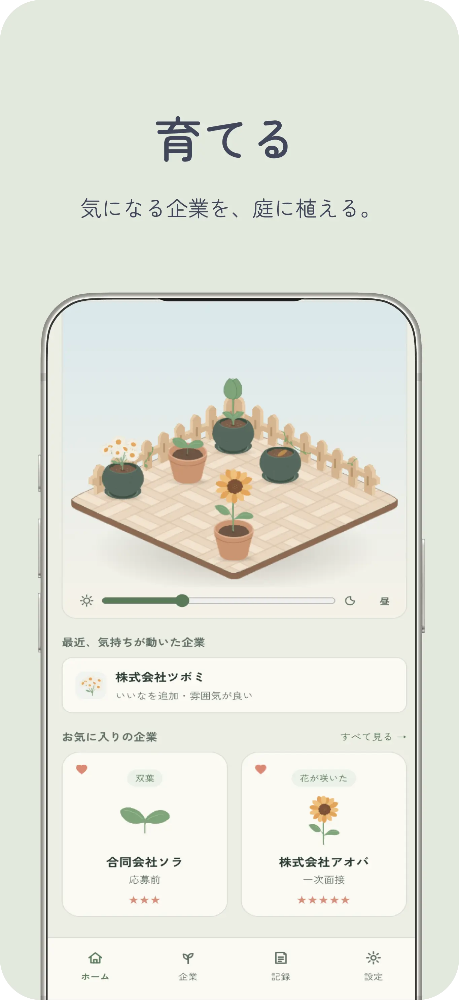
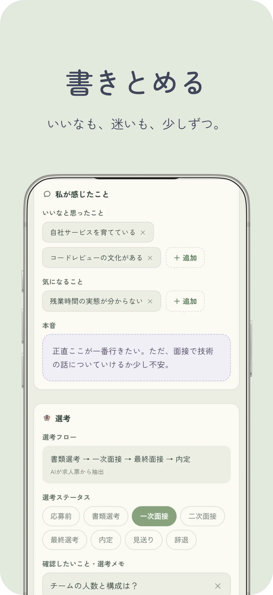
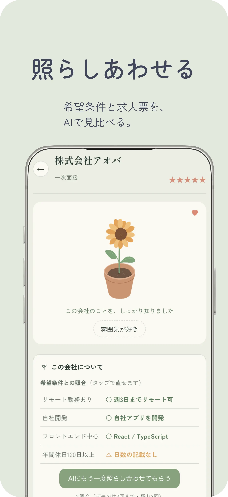

.svg)
MEBAE APP
-

-

-

- 制作時期
- 2026.09 — NOW
- Tools
- VSCode / Figma
- 制作
- 個人制作
- API
- Gemini API
- 担当
- 企画 / 要件整理 / UI設計
デザイン / イラスト
フロントエンド / バックエンド - Backend
- Cloudflare Workers / D1
- Frontend
- React
- 認証
- Clerk
- 公開
- Vercel
制作背景
採用支援の仕事を通じて、応募した企業を忘れてしまう求職者がいることを知りました。また自分自身の転職活動でも、応募先や求人情報をまとめて管理したいと感じていました。
一方、調べた範囲では表やダッシュボード型の管理アプリが多く、機能性だけでなく、転職活動について考える時間も少し楽しくなるものを作りたいと思いました。
そこで、企業を植物に見立て、自分のペースで記録を育てていけるWebアプリ「めばえ」を制作しました。
特徴
-
01｜企業を植物に見立てる
気になる企業を庭に植え、記録を重ねるごとに 種 → 芽 → つぼみ → 花 と育っていきます。
-
02｜企業ごとに記録する
求人票、「いいな」と思ったこと、気になること、本音、メモに加えて、求人ページのリンクや選考フロー、選考状況も企業ごとにまとめて保存できます。情報を見失いにくく、気持ちの変化も振り返れます。
-
03｜AIで希望条件と照合する
求人票と自分の希望条件をAIが照らし合わせ、条件ごとに○△×と根拠を表示します。結果だけで判断するのではなく、自分で考えるための材料として活用できます。
工夫したポイント
-
01｜記録を促すのではなく、自然に残したくなる設計
企業を植物に見立て、記録を重ねる過程を目に見える形にしました。成長は選考結果に左右されないため、不採用になった企業も枯れずに庭に残ります。 また、次の記録を案内するカードを一度作りましたが、実際に使ってみると記録を促されているように感じたため、外しました。庭や植物のイラストは自分で描いています。
-
02｜AIに判断を委ねず、考えるための材料にする
AIによる照合では、一致率のような点数で企業を評価するのではなく、希望条件ごとに一致する点や気になる点を整理する形にしました。照合結果は、自分の判断でいつでも書き換えられます。
-
03｜画面だけでなく、データの流れまで設計する
Reactの画面からCloudflare Workersを通して、D1にデータを保存・取得する構成にしました。 ログインにはClerkを使い、Workers側でログイン中の本人かを確認したうえで、その人のデータだけを扱えるようにしています。
-
04｜実際に使って気づいた点を直す
AIを使って実装を進めるだけでなく、実際に動かして使い心地を確認しました。たとえば、AI照合の待ち時間が長く感じたため、待っている間に照合結果の表の枠を先に表示し、進み具合が分かる文章を出す形に改善しました。
今後の改善予定
- 企業との連絡手段を記録する欄の追加
- 庭の花や鉢の種類の追加
- 画面ごとにファイルを分けるなど、コードの整理
- AIによる求人票の読み取りと照合結果の品質向上